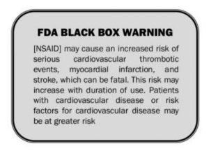
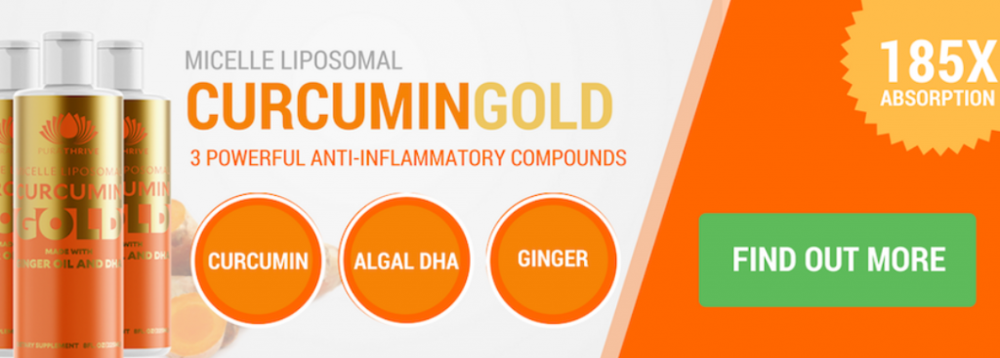
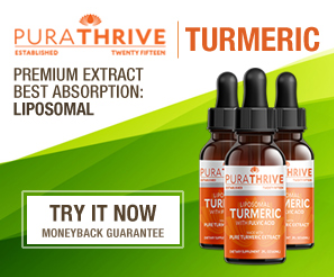

The Facts, Warnings & How Prevention is the Best Cure
Harvard Medical School agrees with the consensus that prolonged inflammation fuels the development of a wide range of chronic diseases
This includes autoimmune ailments like:
- Arthritis
- Psoriasis
- Graves disease
- Multiple sclerosis
- Hashimoto’s thyroiditis (which causes hypothyroidism, fatigue, weight gain)
- Lupus
- Type-1 Diabetes
Neuro-degenerative conditions such as:
- Alzheimer’s disease
- Dementia
- Huntington’s disease
- Parkinson’s disease
- Spinal muscular atrophy
Heart and metabolic diseases like:
- Heart disease
- Insulin resistance
- Type-2 diabetes
- High blood pressure
- Heart attack
- Stroke
- Obesity
As well as a variety of cancers and tumors.
Generally speaking, any disease with an ‘itis’ at the end of its name (bronchitis, laryngitis, gingivitis etc) is an inflammatory disease.
Chronic (long term) Inflammation is the Root of Disease
Inflammation Is Big Pharma’s Best Friend
Big Pharma knows about these recent findings. But you’ll never see a TV advertisement warning the public about inflammation and how to prevent it. This is because Big Pharma is in the business of disease management… not prevention.
A Goldman Sachs analyst recently reported: “If you develop a new drug that cures people rapidly, then patients will not need to take the drug on an ongoing basis, and that limits the amount of money a company can make”.
Most new drugs for cancer and rare diseases are being priced above $400,000 a year per patient. Some drugs are being priced at $1 million per treatment. And prices continue to soar.
Big Pharma won’t tell you that the best cure is prevention… so the public needs to get informed on how to prevent chronic inflammation before it triggers something serious.
Not All Inflammation Is The Same
Acute (short term) inflammation however, is a healthy response to an injury or infection…
Without this kind of inflammation, pathogens like bacteria could easily take over our bodies and kill us.
The problem is, this is supposed to be a quick, temporary event.
It’s supposed to activate, fix the problem, and stop.
But in our modern life we’re constantly battling waves of stress…
With the dangers of RF radiation, toxins in our food, GMO food, pollutants in the air, a high sugar diet, lack of sleep, prescription medicines, alcohol, and dozens of other irritants. This means our body never gets a break.
This creates a low level of chronic inflammation and oxidation – which opens the door to disease and premature aging.
Chronic Inflammation Can Cause Depression
Studies consistently report that groups of individuals with major depressive disorder (MDD) show increased levels of inflammation in blood tests, compared with groups of non-depressed people.
These findings show that depression, even in healthy individuals, can be an inflammatory condition.
This isn’t the first breakthrough study that has linked depression with low-level chronic inflammation. Writing for Psychology Today, Dr. Marlynn Wei discovered that depressed individuals showed high inflammation in their blood tests. And cat scans of their brains repeatedly showed neuro-inflammation.
Chronic Inflammation Sets-In As We Age
As we get older, many of us tend to develop a low-level chronic inflammation that causes disease and damage throughout the body. Because this low-grade inflammation typically accompanies aging, scientists have nicknamed it ‘inflamm-aging.’
The Dangers Of Taking Anti-Inflammatory Medication
Many people believe their only option for inflammation relief is found in the form of potentially harmful Non Steroidal Anti-inflammatory Drugs (NSAIDs).
The FDA has ramped up its warnings about the risk of these drugs and their role in causing heart attacks and strokes.
These drugs have some serious side effects, and it is estimated that they cause at least 16,000 deaths per year and send 100,000 people to the emergency room in the United States.

The FDA is now requiring manufacturers of prescription NSAIDs to update their labels with more accurate information about heart attack and stroke risks.
What Are The Symptoms Of Chronic Inflammation?
Unlike acute inflammation, with its common symptoms of pain, swelling and redness, chronic inflammation symptoms are not as easy to detect.
Some symptoms of chronic inflammation include:
- Constant fatigue or lethargy
- Mouth sores
- Allergies or asthma flare-ups
- Ongoing aches and pains such as the joints or muscles
- Weight gain
- Skin flare-ups
- Chest pain
- Abdominal pain
- High blood pressure
- Constipation or diarrhea
These symptoms can last for months to years
Intermittent Fasting
Fasting has been practiced for thousands of years, but only recently, studies have shed light on its role in reducing inflammation and oxidative damage.
There are many different ways to go about intermittent fasting, but the most popular ways are daily 16 hour fasts (skipping breakfast). Or 24 hour fasts (skipping breakfast and lunch).
Not only does intermittent fasting decease inflammation, but it boosts human growth hormone… and it’s also a great way to lose a few excess pounds.
If you haven’t already got the memo yet, the phrase; “breakfast is the most important meal of the day” – is a longstanding marketing line that the breakfast industry uses to get us to buy their stuff.
Consume Alkaline Foods & Fermented Foods
Inflammation thrives in an acidic environment. Therefore we need to consume foods that neutralize acidity.
A great way to alkalize your body is by taking fermented, raw apple cider vinegar. Raw, fermented ACV is the only vinegar that is alkaline-forming to the body. All other vinegars (white, balsamic, red wine, etc) are acid-forming. For a health balanced pH, raw apple cider vinegar is one of the best things to add to your diet.
Eat plenty of fermented foods – kombucha, kimchi, sauerkraut, kefir, yogurt and fermented vegetables. These are all excellent examples of probiotic-rich superfoods that will help to populate your gut with beneficial bacteria… and neutralize acidity.
If Not Anything Else, Consume Turmeric/Curcumin
Curcumin, a compound found in turmeric, has well over 3,700 different research papers published in the US National Library of Medicine reporting its various therapeutic effects on inflammation. Curcumin’s anti-inflammatory effects have been shown to treat:
- Metabolic syndrome (Insulin resistance, high blood pressure, obesity, heart attack, diabetes, stroke)
- Arthritis
- Neuro-degenerative diseases (dementia, Alzheimer’s disease, Parkinson’s disease)
- Psoriasis
- Depression
- Cancer therapy
And a lot more…
A 2004 study published in the journal Oncogene found that curcumin is an superior alternative to the anti-inflammatory/pain killer drugs: Aspirin, Ibuprofen, Sulindac, Phenylbutazone, Naproxen and Diclofenac.
But Wait… Isn’t Curcumin Hard to Absorb?
Although curcumin is excellent at helping the body keep control over inflammation and pain, it is notoriously difficult to absorb…
Unless you use the right formulation, curcumin will not reach the required levels in your blood stream that would be beneficial for inflammatory conditions.
If you’re using turmeric with your cooking or in your smoothies, add pepper. Pepper contains a compound called piperine, which increases absorption of curcumin.
Avoid the Dreaded “Expensive Pee” Syndrome
Most of the turmeric supplements you see in stores come in the form of encapsulated powders. The truth is with turmeric powder you may be getting very little actual benefit.
It often isn’t very fresh, and it’s sometimes made with harsh processes that can destroy or degrade turmeric’s healthful components.
Because turmeric is hard to absorb, it must be formulated in a certain way allowing the body to absorb and utilize its entire spectrum of nutrients.
There’s another NEW form of turmeric that actually tastes amazing AND is easy to absorb…
PuraTHRIVE Organic Turmeric Extract is an outstanding full-spectrum extract that’s “liposomalized”—meaning it’s specifically blended to make the turmeric bind to phosphlipids (fats) that increase its bioavailability 185 times more than turmeric in its natural form.
This formulation takes all that raw turmeric has to offer and presents it in a format that your body LOVES to consume.

